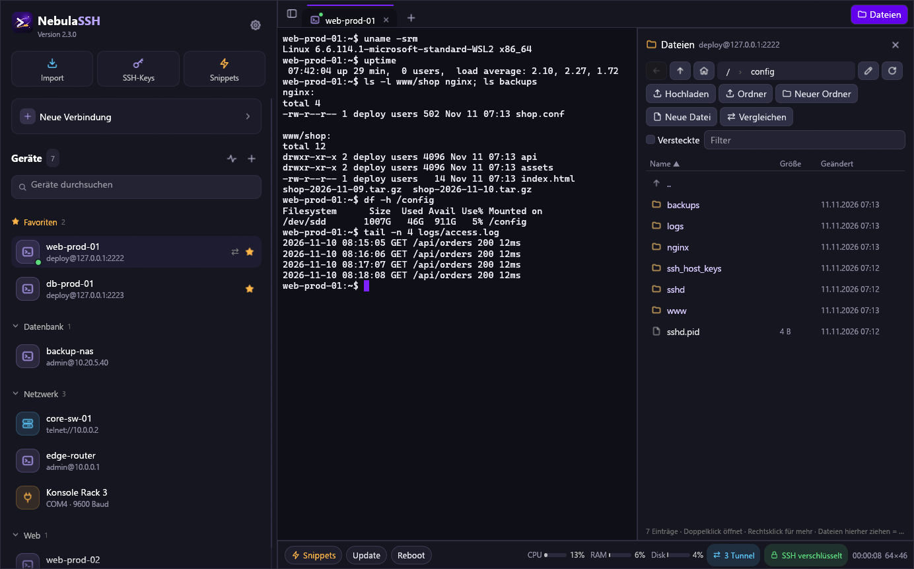
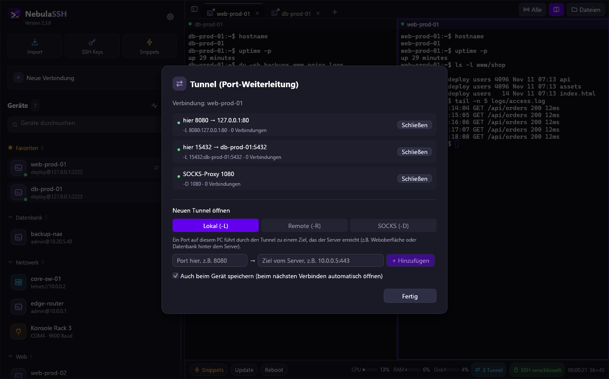
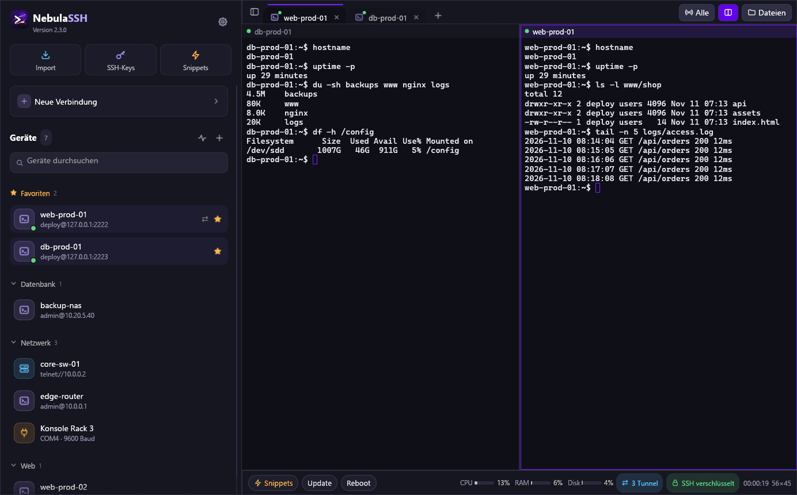
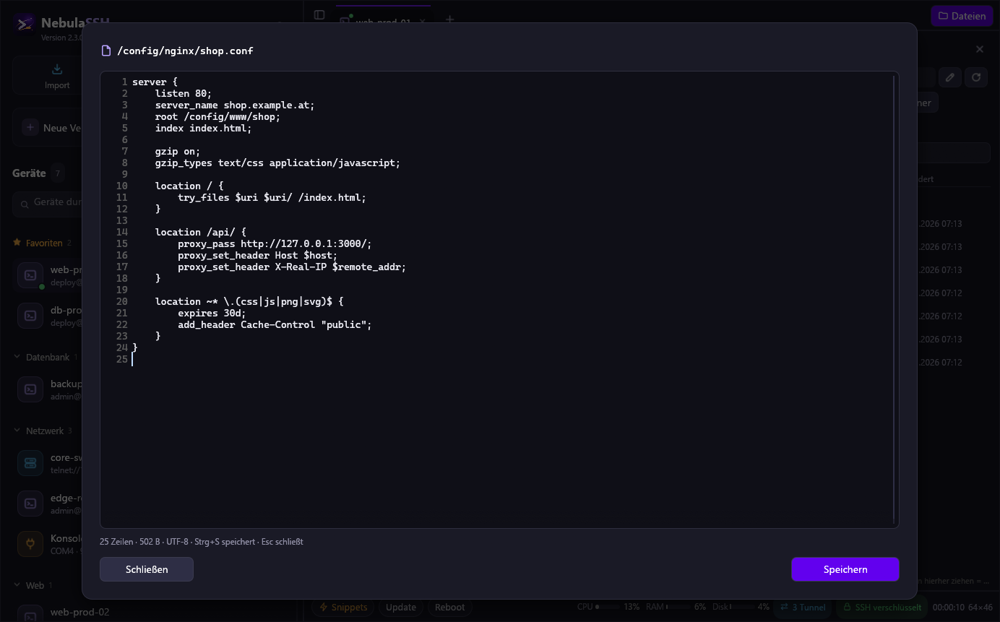
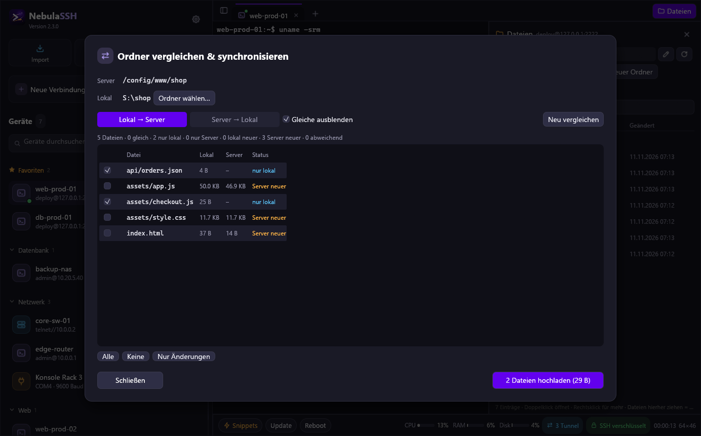
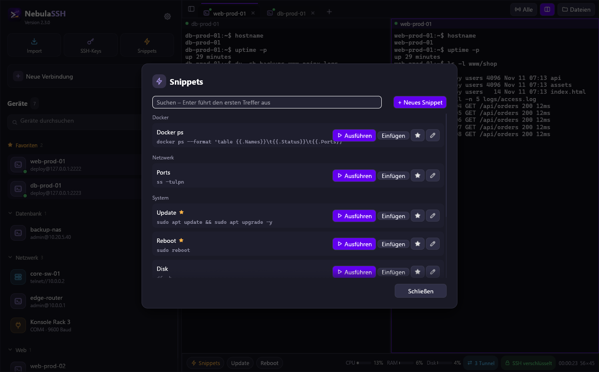
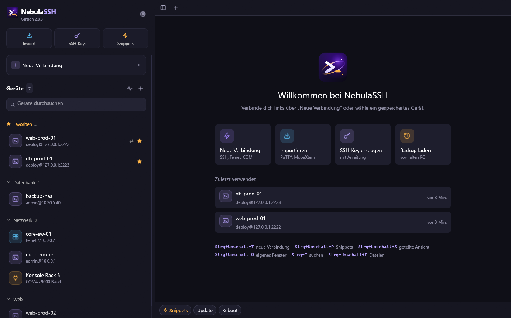
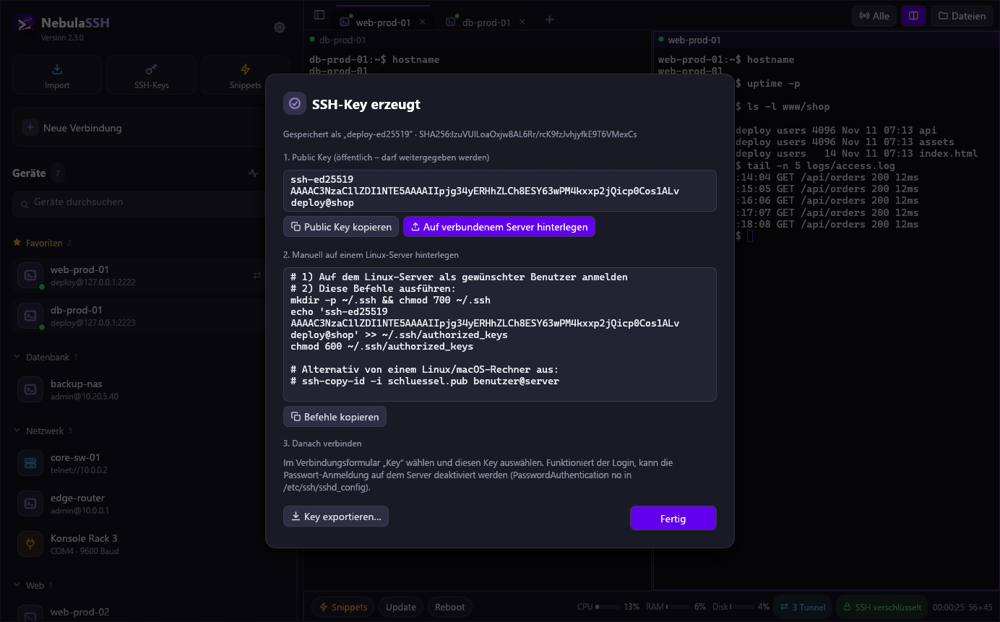
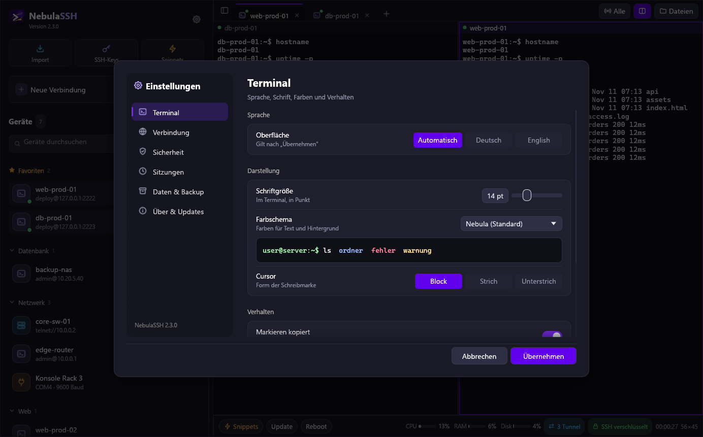
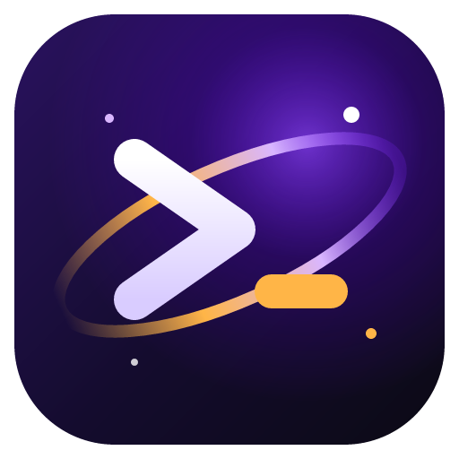

>_
Linux-Server
deploy@web-prod-01
Terminal, SFTP-Explorer und Editor nebeneinander. CPU, RAM und Festplatte stehen in der Statusleiste.
SSHSFTPX11
NebulaSSH verbindet dich mit Servern, Switches und seriellen Konsolen – per SSH, SFTP, Telnet oder COM-Port. Ein nativer Windows-Client, komplett in Rust, ohne Browser im Hintergrund.

Alles, was eine Konsole hat, landet in derselben Geräteliste – mit Gruppen, Favoriten und einem Punkt, der zeigt, ob es gerade erreichbar ist.
Terminal, SFTP-Explorer und Editor nebeneinander. CPU, RAM und Festplatte stehen in der Statusleiste.
Über einen Jump-Host ins interne Netz, Datenbanken und Weboberflächen per Tunnel erreichen.
Keyboard-Interactive, ältere Verfahren als Rückfall und Telnet für Geräte, die nichts anderes können.
USB-Konsolenkabel einstecken, Port und Baudrate wählen, fertig – mit eigenen Profilen pro Gerät.
Echte Screenshots von Version 2.3 – aufgenommen mit zwei Test-Servern, nichts nachgebaut.

Port-Weiterleitungen lokal, remote oder als SOCKS-Proxy – pro Gerät gespeichert oder während der Sitzung geöffnet.

Bis zu vier Terminals nebeneinander. Ein Tab lässt sich aus der Leiste in ein eigenes Fenster ziehen.

Doppelklick öffnet die Datei im Editor, Strg+S speichert zurück auf den Server.

Lokalen Ordner mit dem Server vergleichen und nur Neues und Geändertes übertragen. Gelöscht wird nichts.

Häufige Befehle mit Platzhaltern, sortiert in Gruppen und mit Suche.

Gruppen, Favoriten, zuletzt verwendet – und ein Punkt zeigt, wer erreichbar ist.

Ed25519, RSA oder ECDSA erzeugen und mit einem Klick auf dem verbundenen Server hinterlegen.

Farbschema, Schrift, Cursor, Sprache und Verhalten – mit Vorschau.
Das größte Update seit dem Umstieg auf Rust. Bestehende Installationen bekommen es beim nächsten Start angeboten.
Die Dinge, die man erst vermisst, wenn sie fehlen.
Neue Server zeigen ihren Fingerprint zur Bestätigung. Ändert er sich später, warnt NebulaSSH, bevor ein Passwort gesendet wird.
Geräte und Keys liegen AES-256-verschlüsselt auf der Platte; der Schlüssel steckt in der Windows-Anmeldeinformationsverwaltung.
Optionales Startpasswort (Argon2id) und automatische Sperre nach Inaktivität – praktisch auf geteilten PCs.
Neue Versionen werden beim Start erkannt und nur installiert, wenn Signatur und Prüfsumme stimmen.
Alles in eine passwortgeschützte .nebula-Datei exportieren und auf dem neuen PC wiederherstellen.
Kopierte Passwörter verschwinden nach 30 Sekunden automatisch wieder aus der Zwischenablage.
Einen Befehl gleichzeitig an alle verbundenen Tabs senden – für mehrere Switches auf einmal.
Moderne Verschlüsselung zuerst, ältere Verfahren als abschaltbarer Rückfall.
Strg+F durchsucht die Ausgabe. Markieren kopiert, Rechtsklick fügt ein.
Version 1 lief mit Go und einer eingebetteten Browser-Oberfläche. Seit 2.1 ist NebulaSSH komplett in Rust geschrieben: Terminal, Oberfläche und SSH laufen in einem einzigen, schlanken Prozess.
Deine Geräte aus Version 1 lassen sich weiterverwenden – die verschlüsselten Dateien sind kompatibel.

Alle Downloads kommen direkt aus den GitHub-Releases und sind immer die neueste Version.
Empfohlen. Installiert nach C:\Program Files\NebulaSSH, mit Startmenü-Eintrag und Deinstallation über „Apps & Features“.
Eine einzelne EXE für den USB-Stick. Geräte und Einstellungen liegen im selben Ordner.
NebulaSSH-portable.exe · 12,9 MB Portable herunterladenWindows 10 oder 11, 64 Bit · Alle Versionen & Änderungen · Prüfsummen